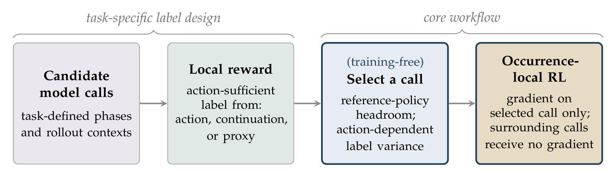
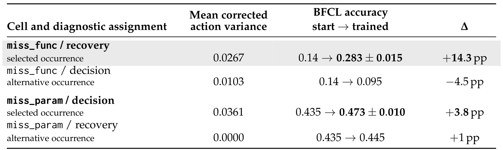
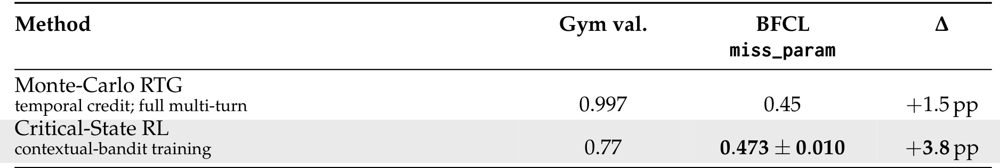
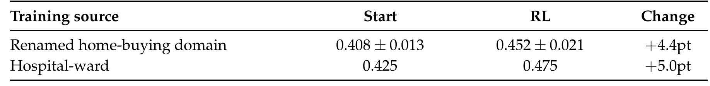
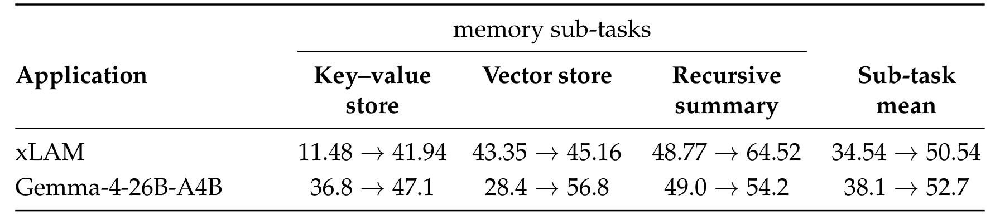

Critical-State RL：多轮工具调用中，先诊断哪一轮真正值得训练
- 英文标题：Critical-State RL: Diagnosing Trainable States for Multi-Turn Tool Use
- 作者：Zixiang Chen、Wenting Zhao、Zhepeng Cen、Akshara Prabhakar、Jielin Qiu、Jianguo Zhang、Zhiwei Liu、Tulika Manoj Awalgaonkar、Liangwei Yang、Shelby Heinecke、Silvio Savarese、Huan Wang。
- 机构：Salesforce AI Research。
- 公开日期：2026-09-21，arXiv v1；精读日期：2026-09-23。
- 论文入口：arXiv:2609.24985。代码状态：未核验到独立代码或项目链接。
- 阅读范围：完整31页PDF，包括主文、理论、训练细节、记忆应用与提示词附录。以下数据均为原文报告，未独立复现实验。
1. 背景和问题
1.1 一次失败轨迹并不能告诉我们该训练哪个动作
多轮工具智能体常见一种尴尬失败：用户提出请求时，执行请求所需的工具还没有开放，模型正确地拒绝了执行；下一轮系统补上工具，模型却仍停留在拒绝状态。也存在相反的问题：函数已经存在，但是必要参数尚未给齐，模型过早发起了会改变环境状态的调用。两种任务表面上都属于“先等待，后执行”，但真正需要改变的模型调用未必相同。前者可能需要训练恢复执行，后者可能需要训练等待信息。如果训练器把最终成败复制到每一轮，就无法区分本来已做对的拒绝与后来没有完成的恢复。
这篇论文把问题落在一个比完整信用分配更具体的位置：在开始强化学习之前，能否识别某个候选调用是否存在可被动作改变的奖励信号？作者并未声称自动发现所有关键步骤。候选阶段仍来自任务结构、失败分析或元数据，例如“工具开放前的决策响应”“工具开放后的恢复响应”“记忆已满后的存储响应”。真正要诊断的是这些候选之中，改变当前动作是否能够改变条件期望收益。这把讨论从“这个地方经常失败”推进到“这个地方的行为差异是否解释了成功概率差异”。
一个模型调用被称为 occurrence，可理解为带有完整上下文的一次具体决策。阶段则是若干同类上下文构成的集合，如“函数缺失阶段”。同一阶段里，不同用户、工具状态、历史对话对应不同的具体调用。论文强调训练单位是后者而不是整条轨迹：前缀只提供输入，后续调用可以提供奖励，但只在被选中的调用上计算强化学习损失。这个定义避免把“局部训练”等同于“固定训练第几轮”，也避免把所有处于相同阶段的上下文当成相同状态。
1.2 奖励有变化，未必意味着当前动作可学
GRPO通过一组同提示生成结果构造相对优势，不需要显式价值模型。类似DAPO的动态采样会排除奖励全对或全错的组，让训练更多落在混合结果组上。这个思路对确定性的局部答案验证很自然：答案变了，正确性就可能变化。然而多轮场景里，当前动作之后还有随机生成。同一句合理拒绝之后，下一轮可能正确恢复，也可能再次拒绝；终局奖励因此一正一负，却没有证据证明当前拒绝行为需要改变。对当前动作施加相反梯度，可能只是把后续随机性当成了当前动作的因果作用。
作者给出的Gemma试验就是这种情况：工具缺失时，存活样本中的决策响应都是没有工具调用的干净拒绝，但组内奖励仍在零与一之间变化，标准差达到0.477。这个观察不能严格证明所有拒绝动作具有完全相同的效果，因为自然语言措辞也可能影响恢复；它说明的是，仅从混合奖励无法确定可训练信号。需要固定当前动作重新采样后续过程，再比较不同动作的平均结果。这样才能区分“同一动作碰巧走到了不同后果”和“换一个动作真的提高了成功概率”。
因此，论文关心的方差不是原始奖励方差，而是动作条件期望的方差。它也不是通常意义上的不确定性采样：不确定性大可能来自系统服务、工具响应或者后续解码；这些变化可以让训练样本看上去信息丰富，却不一定给当前参数更新提供方向。对长链路智能体而言，这个区分尤其重要，因为一条轨迹中有更多不受当前动作控制的后果，终局波动可能随着链路增加。诊断需要在相同上下文下进行，否则上游状态差异又会混入动作差异之中。
1.3 相对已有局部训练方法，贡献在哪一层
PivotRL已经利用冻结参考策略分析专家轨迹中的状态，保留低均值且验证器方差非零的状态，再用GRPO训练；Critical Step Optimization则从失败轨迹中找候选步骤，验证专家替代动作的后续效果，构造偏好对。本文并不是第一个提出只训练局部步骤，也不是第一个使用动作条件收益方差。它的具体增量是把任务定义的候选调用、局部奖励充分性、参考策略改进空间，以及固定前缀的嵌套采样连成一个训练前诊断流程，并用四格干预检验选中位置与替代位置。
这也决定了读论文时应抓住的证据顺序。第一层是数学分解：动作相关变化和延续噪声能够在固定前缀下分开。第二层是诊断实验：同一个Gemma模型在两类任务上分别训练两个候选轮次，验证选择方向。第三层才是跨模型、重复调用和记忆管理的应用。后两类应用展示接口可以适配更多奖励来源，但并不等同于对诊断指标的再次随机对照验证。把所有实验合并成“诊断普遍有效”的结论，会超出证据范围。
对于推荐系统和个性化Agent，这个问题有直接的研究启发。检索请求、候选集修订、解释生成、记忆写入都可能在同一链路里共同决定用户反馈。一次不满意既可能来自当前检索动作，也可能来自后续排序或语言表达。若想给某个工具决策训练策略，应该先固定上下文和其他模块，测量换动作能否改变局部可验证结果。这个启发是本文方法的迁移推论，论文没有推荐日志实验，也没有证明短期点击代理能充分代表长期满意度；业务奖励的选择依然需要独立论证。
在评测概念上，还应把训练阶段使用的局部标签与报告阶段使用的基准分数分开。前者可能只看一个动作是否重复、一个目标工具是否出现，后者却会检查整个多轮环境中的累积状态。两个标量虽然都叫奖励，涵盖的信息并不一样。局部奖励容易计算，有助于控制信用噪声，但只有在漏掉的行为不会改变目标判断时，才适合作为充分代理。本文的分析价值，正是迫使研究者在选择训练位置之前解释这个接口，而不是把验证器输出默认当成完整任务目标。
2. 方法
2.1 候选阶段、局部标签与诊断门槛
原文第三节先定义候选阶段和局部标签，再做无需更新参数的诊断。设当前上下文为 $x$，模型生成动作 $a$，在一个有界的后续窗口内得到标签 $z$，最终基准回报为 $R$。标签可以直接检查当前动作，也可以通过后续恢复得到，还可以由预处理的内容代理构造。核心对象是固定动作后的标签均值，而不是某一次采样结果：
符号解释：$x$ 是上下文，$a$ 是当前动作，$z$ 是局部标签，$π_θ$ 是当前策略，$Q$ 为动作条件均值，$q$ 为策略平均。这里 $Q$ 冻结了当前上下文和延续机制，$q$ 是当前策略下的平均局部收益。候选需满足三个不同门槛。其一，完整局部标签应能中介动作与终局回报的关系；其二，相对于参考策略仍有正的改进空间；其三，在当前策略支持的动作中，条件均值确实不同。前两项由任务结构、参考行为和数据共同论证，不能仅靠方差排名替代。
符号解释：$R$ 是终局回报，$π_0$ 是参考策略，$Δ_{\rm head}$ 是正的改进空间门槛；条件独立符号表示给定上下文和标签后的独立关系。第一项是动作充分性条件，第二项中 $\pi_0$ 是参考策略，$\Delta_{\rm head}$ 是任务相关的正门槛。充分性表达“在知道上下文及标签后，动作不再额外解释终局结果”。现实工具奖励通常只近似符合：例如检查目标调用是否出现，却不检查恢复时所有多余调用，就会遗漏基准的惩罚项。所以这是一项理论前提及设计要求，不能写成作者已经证明所有代理奖励都满足的普适事实。只有标签方向与最终回报一致，局部提升才值得追求。

原文Figure 2左半部分提醒读者，候选调用与局部标签需要任务知识。工具缺失可以从环境元数据识别，记忆满可以从失败返回识别，但“什么算好动作”并不自动出现。右半部分才是诊断与优化的通用流程：先确认参考策略留下空间，再比较动作相关方差，最后把损失放在被选中的响应上。图中训练前选择明确不更新参数，它仍需要采样成本，不能理解为没有推理开销。图的最后一个框还强调周围调用没有梯度，但这不意味着它们在计算上可以全部删除；如果标签依赖恢复，必须真的运行恢复并保存其结果。
这张图还有一个容易忽视的顺序：先定义同一标签下可比较的候选，再做排序。如果一个候选使用二值准确性，另一个使用尺度任意的连续奖励，直接比较方差会把奖励缩放当成学习价值。作者的四格比较在同一类别内使用共同标签，因此具备明确的比较对象，而不是把所有任务的方差放在同一榜单上。实际实现还要保存上下文、动作和后续采样的层级关联，不能把所有结果摊平为一个奖励数组。否则流程框虽仍叫诊断，统计对象已经从条件均值变化变回混合来源的总体波动。对工程读者而言，图中两个区域也对应责任边界。环境适配器提供候选元数据、动作合法性与局部验证器；诊断器负责冻结策略采样、去除延续噪声和选位置；训练器负责将输入前缀与可求梯度token分开。任何一层漏掉，都不能仅靠改一个损失mask复现完整方法。尤其是状态会改变的工具，复用固定动作重新运行后续时必须恢复同一环境快照，否则动作之间的实验比较会被不同环境状态污染。后一点是依据采样条件推导的实现要求，不是论文声称已经解决的通用工具沙盒。
2.2 固定前缀的嵌套采样与有限样本修正
诊断首先采样模型自己的前缀，然后在每个固定前缀下采样多个当前动作；对每个动作，再固定它并独立采样多次后续过程。使用模型前缀很重要：教师强制的真值历史可能让恢复轮太容易，使动作分布饱和，掩盖真实运行中的学习空间。反过来，把不同模型前缀下的原始标签混在一起，又会把上游随机性误当成当前动作信号。正确做法是在每个前缀内部估计，再对前缀分布取平均。
符号解释：$V_{\rm act}$ 为动作条件均值的方差，$V_{\rm cont}$ 为动作内延续方差的平均。$V_{\rm act}$ 衡量换动作之后期望标签怎样变化，$V_{\rm cont}$ 衡量同一动作下延续仍有多随机。两个世界即使二值标签都各半、headroom相同，动作均值也可能分别是零零一一，或零、二分之一、二分之一、一。它们的动作方差分别为四分之一和八分之一。只看标签边际分布无法区分这种可改进结构，附录用这一反例说明混合奖励筛选的识别不足。
设每个前缀采样 $n$ 个动作，每个动作采样 $m$ 次后续，动作均值之间的样本方差为 $S^2_{\rm between}$，动作内部样本方差的平均值为 $S^2_{\rm within}$。直接使用动作均值方差仍有有限采样噪声，修正为：
符号解释：$n$ 为动作数，$m$ 为每动作后续数，$S^2_{\rm between}$ 为动作均值间样本方差，$S^2_{\rm within}$ 为动作内样本方差均值，$\widehat V_{\rm act}$ 为校正估计。样本方差分母分别使用 $n-1$ 和 $m-1$，独立、平衡采样及有限二阶矩是解释无偏性的基础。修正后可能得到负值，这不表示真实方差为负，而是有限样本估计的波动。四格实验在求平均时保留零值及负值，避免把负估计全部截断后引入向上偏差。实验使用每个场景八个动作、每个动作四个后续；三个单元各保留六十四个干净前缀场景，缺参恢复单元因十个前缀不一致而只保留五十四个。
附录进一步说明采样预算不能只增加后续次数。如果动作数固定，即使把每个动作的均值估得极准，仍只看到了有限个动作，动作覆盖误差不会消失。增加独立动作可以改善排序可靠性，增加独立前缀则同时缓解场景异质性。两候选真实方差差距越小，有限样本排序越不稳定；因此主表支持类别层面的选择，并未校准一个可以跨任务使用的万能方差阈值。线上系统若按这个思路实施，应记录候选间间隔和估计不确定性，不宜只存最终选中的轮次。
理论把该诊断量与固定小KL预算下的最佳局部收益联系起来：
符号解释：$G_x$ 是固定前缀下最佳局部标签增益，$\epsilon$ 为KL预算，$p$ 为基策略动作分布，$p'$ 是同一有限动作集合上的任意新分布，$Q$ 与延续机制保持固定。这个结论描述的是不受参数化限制的局部潜力。共享神经网络只能沿其参数空间实现部分动作分布变化，不同前缀的梯度还可能互相抵消，因此不能把方差大小直接换算成模型训练后的百分点收益。当方差为零时，期望梯度为零；方差非零则只意味着有潜力，不保证实际优化器一定学到。
2.3 单次调用训练、奖励设计及共享参数漂移
选中调用后，训练使用局部标签构造优势，仅对其生成token求导。令 $g(a)=\nabla_\theta\log\pi_\theta(a\mid x)$，$b(x)$ 为不依赖当前动作的基线，那么：
符号解释：$g(a)$ 为动作对数概率的参数梯度，$b(x)$ 是仅依赖上下文的基线，$q(x)$ 为策略平均标签；期望涵盖动作及后续随机性。该式解释了为什么同一动作之后随机好坏不产生额外期望方向，却会增加梯度估计方差。局部更新不是必须取消环境交互：有些例子输入预计算前缀后直接打分，另一些仍要运行后续恢复，但不为恢复响应计算损失。Nemotron的缺工具应用训练决策轮，用后续恢复是否发出目标工具调用作为后果项：
符号解释：$a_{\rm dec}$ 是决策响应，$y_{\rm rec}$ 是恢复输出，$z_{\rm tool}$ 是工具局部标签，no_write检查无状态写入，consequence检查目标调用。前项是二值行为门控，后项在零到一之间，按函数名及宽松参数比较检查恢复输出。只读查询允许通过门控，状态修改调用不通过。作者也承认基于工具名字的门控只是读写属性的近似，没有验证不可逆性。这种乘法把过程违规置零，但对所有已经正确等待的动作而言，奖励差异仍可能主要来自后续恢复；因此Gemma不能机械复制Nemotron的决策轮训练位置。
记忆存储使用另一种加法设计：关键词保留、记忆类型得分、正确操作顺序奖励和记忆满时的特定奖励合并，再截断到负一至一。关键词由GPT-4o预处理提取，每条两至五个，包含有意义的否定词。硬规则覆盖加法结果：破坏性清空记忆记负一，记忆满后不先删除就重复添加记负零点五。这个设计把“删除安全条目后再添加”与“保存回答所需信息”放在同一局部响应上，但关键词是否存在仍不等于以后回答正确，必须用完整链路评测检验。
最后，共享参数让“其他轮不接收梯度”和“其他轮行为完全不变”不同。即使损失只算一轮，参数更新也会改变同一模型在其他轮的输出分布。附录定义混合策略：被选轮用新策略，周围轮仍用冻结策略；再把完整新策略与此混合策略的差距用外部调用KL约束。对有界回报可写成：
符号解释：$J$ 是完整策略期望回报，$\theta_0$ 为锚定参数，$R_{\max}$ 为回报绝对值上界，$\Delta J_{\rm hyb}$ 是只替换选中调用时的真实收益，$D_{\rm out}$ 衡量其他调用引入的分布漂移。使用代理估值时还需加入代理误差相关项。该界表明，局部代理继续上涨并不保证完整任务继续改善；更大的共享参数漂移会侵蚀迁移收益。论文讨论在满足条件时的小更新保证，不能推广成任意训练步数下的单调提升。实务上应同时监控局部验证器、完整任务和非目标行为，而不是只看所选调用的训练奖励。
3. 实验结果
3.1 四格干预：选择位置比固定“早训练”或“晚训练”更有解释力
BFCL v4的多轮任务中，缺工具类别在第 $k$ 轮恢复工具，实质请求出现在此前一轮；框架会把空用户消息替换成工具可用的桥接提示。缺参数类别则一开始已有函数，只是必要参数在后一轮补齐。评测器累计检查状态，会惩罚多余写操作、缺少调用和超过步骤上限，但不惩罚只读查询。作者固定无思考模式的Gemma-4-26B-A4B，在每个类别分别训练决策与恢复，得到可比较的四个单元。

原文Table 1最清楚的证据是缺工具任务：恢复轮校正动作方差为0.0267，高于决策轮0.0103；训练前准确率均为0.14，训练恢复后达到0.283±0.015，即增加14.3个百分点，训练决策则降到0.095，减少4.5个百分点。这支持在该模型与配置下，恢复行为更值得优化。缺参任务的方向相反：决策轮方差0.0361，恢复轮为0.0000；前者从0.435到0.473±0.010，增加3.8个百分点，后者到0.445，只增加1个百分点。这里的“个百分点”是准确率差值，不能读成相对百分比改善。
比较的统计口径需要紧跟结果：两个被选单元使用四个训练种子，均值和标准差跨种子计算，种子为42、123、7、99；替代单元仅报告点估计。所有单元固定在第三十步检查点，以确定性解码、相同的两百项配对基准评测。这样的设计能支持选择方向，却还不够证明每个替代方案的均值都显著更差，更不能把主表写成四个单元均已完成四种子验证。作者也将缺参收益称为方向性结果。若未来复现，最值得补齐的是替代轮次多种子和配对不确定性，而非只重复最好的一格。
表中还展示了“总是训练决策”和“总是训练恢复”各自只适配一个类别。诊断同时选择了两类任务中改善较多的位置，因此贡献在于模型配置与任务类别匹配，而非恢复轮本身优越。方差0.0361对应的收益比0.0267更小，也提醒读者不能跨任务把方差大小当作百分点收益预测器：基础正确率、奖励映射、参数化可达方向和数据量都不同。论文没有拟合这种定量关系。主实验较有说服力的结论是先选位置再训练能避免把算力放在信号弱或方向不合适的调用上。
为排除只记住桥接提示，作者把评测桥接文字换成未见过、也不点名工具的表达，大意为“我调整了一下这边的设置”。在种子123、第三十步、两百项配对评测中，缺工具准确率从0.095到0.225，增加13个百分点；原桥接对应0.140到0.270，同样增加13个百分点。新提示对基础模型更难，但收益保持，支持超越固定措辞的迁移。它仍是一次受控措辞变化，不能据此声称已经覆盖真实用户各种省略、歧义和工具变更协议。
3.2 与完整轨迹训练和监督训练比较
论文进一步比较非饱和的缺参类别，把完整多轮Monte-Carlo return-to-go训练与选中调用的上下文bandit训练放在一起。比较关心的是局部训练环境奖励与外部BFCL任务表现是否一致，而不是仅看训练集上谁拟合得更好。

原文Table 2显示，完整轨迹RTG的Gym验证分数达到0.997，明显高于局部方案的0.77；但它的BFCL缺参准确率是0.45，只比基础模型增加1.5个百分点，局部方案则为0.473±0.010，增加3.8个百分点。最值得关注的是排序发生反转：更高的训练环境分数没有转化为更强的基准收益。因此，如果训练基础设施只汇报环境奖励，很容易误以为RTG完全解决了任务，却忽略了训练分布、奖励定义与真实评测的差异。表格支持在这一单元中保留完整链路验证的必要性。
与此同时，RTG是单种子比较，局部结果沿用四种子汇总；RTG也没有训练参数化critic，而是蒙特卡洛回报。因此不能将结果改写成“局部方法优于所有价值函数方法”，更不应把高Gym分数直接解释成已经证明过拟合的唯一机制。论文展示了性能差异及外部转移不足，但没有隔离出所有导致差异的因素。对系统复现，应保持训练预算、采样温度、工具环境、检查点选择和种子数量一致，才能把位置选择、信用来源与优化器差异逐一拆开。
目标轮次的监督微调对照也有相似启发。缺工具恢复任务上，最好监督检查点仍比基础模型低六个百分点，作者观察到它过度偏向调用工具，破坏了本应拒绝的行为；局部强化学习则在获得恢复收益时保留两种行为。缺参决策任务上，监督微调增加三个百分点，局部强化学习增加三点八个百分点，差距较小。固定目标动作与在线采样后由验证器打分的差异，可能影响行为边界学习，但这里仍是单种子监督比较，不能据此一般否定监督微调，也不能认定强化学习收益全部来自诊断阶段。
一个很有价值的控制是只修改梯度mask，同时仍使用轨迹级标量优势。作者比较完整、恢复、随机及决策mask，缺参任务都接近起始表现，没有恢复完整局部方案的收益。这说明把损失限定某轮只是实现的一部分；奖励归属与训练单位同样重要。若工程迁移仅把其他轮的loss置零，却继续使用整条轨迹的成功失败作为当前优势，仍可能把独立后果噪声塞回目标轮。这一结果与理论分解一致，但不能说明任何任务上的mask控制都无效。
3.3 跨模型工具任务与日志应用
Nemotron-Super-120B的缺工具任务选择工具开放前的决策响应，使用无写入门控乘以后续恢复得分。这个位置与Gemma缺工具实验不同，正是论文反对固定轮次经验法则的实际例子。训练使用LoRA，秩六十四、缩放系数二百五十六，学习率为五乘十的负六次方，KL惩罚系数为零；这组设置属于特定应用，并不是由理论推导出的统一最佳配置。

原文Table 5把训练来源分开。重命名购房领域从0.408±0.013到0.452±0.021，差值4.4个百分点，标准差来自三次重复确定性评测；独立设计的医院病区任务从0.425到0.475，提高5个百分点。后者训练任务与未改动的BFCL不同，因此比仅改工具名字更接近跨任务迁移证据。前者训练与域内验证共享重命名环境，不能把域内验证当成未见过的新分布。两个来源的起点也不同，不能把最终数字直接排列为训练来源优劣榜。
这项实验特别提醒“温度零”等于“完全可复现”是错误假设。论文报告并发vLLM评测会出现约三至五个百分点的波动，跨月重跑也可能偏移约二至三个百分点，涉及批处理和专家并行等非确定性。作者因此使用完整十二万八千上下文、串行批量一解码，或独立多服务重复检查；较短窗口会静默损坏较长思考轨迹。这里4.4个百分点的收益与服务波动属于相近数量级，配对、同日和重复评测就不是附属细节，而是判断是否真的改善的重要依据。医院任务在串行及并发重新服务下都得到五个百分点差值，提供了一项稳健性支持。
效率方面，附录报告该Nemotron对照中完整轨迹优化器一步成本是局部训练一步的十六至三十倍。这个数字描述一步的成本差异，不能直接当作达到同样准确率所需总成本的加速比。诊断本身要运行嵌套采样，局部步骤和轨迹步骤处理的信息量也不同，若要评价总预算，需要把候选扫描、诊断、训练、服务评测和失败重试一并计算。论文没有给出覆盖这些项目的普适成本结论，因此本笔记只保留其特定设置下的逐步成本观察。
日志重复调用应用进一步改变了标签来源。真实交互日志中，在已被标记的位置，Nemotron有百分之三十概率重复此前成功且已有可用结果的函数名与参数；GPT-4.1在相同日志上的重复率为百分之零点六一。局部标签完全由当前动作与历史决定，没有后续采样项。训练后，与参考模型“调用还是直接回答”的一致率从百分之三十七升到约百分之七十五，三个种子范围为百分之七十二至七十八。需要保留指标定义：一致率不是最终用户任务成功率，也不是重复率直接降到百分之二十五。
附录指出，在二十个本来需要调用的机会中，训练模型跨种子漏掉二至三个，基础模型漏掉两个。这意味着减少重复调用同时可能强化不调用的倾向，仍要监控必要调用召回。日志训练使用固定上下文，没有在线探索；它证明从某类已发现错误中可以构造局部训练数据，不保证改变策略后的新状态分布也同样安全。对推荐工具链，如果把冗余检索当作重复调用，必须区分工具结果是否过期、上下文是否变化，不能直接照搬函数名参数相同即冗余的判据。
3.4 记忆应用：操作合规与信息保真必须分别观察
记忆满后，正确动作通常是移除一个可安全删除的条目再添加新内容，不能清空全部核心或归档记忆。xLAM应用用元数据指定存储响应；Gemma应用扩展成分别包含存储和检索响应的混合数据，每个训练样本仍只更新一次调用。奖励代理关注两至五个必要关键词是否保留，尤其是否保留否定信息。原文案例中，用户的“牺牲重要关系时财务成功毫无意义”被压缩成“关系比财务成功更重要”，后来回答从绝对的“毫无意义”弱化为“意义很小”，说明流畅压缩可能改变逻辑强度。

原文Table 6中，xLAM键值存储从11.48到41.94，向量存储从43.35到45.16，递归摘要从48.77到64.52，非加权子任务均值从34.54到50.54，提升十六个百分点。Gemma键值存储从36.8到47.1，向量存储从28.4到56.8，递归摘要从49.0到54.2，均值从38.1到52.7，提升十四点六个百分点。最大收益位置不同，分别是xLAM键值存储与Gemma向量存储，这说明相同的“记忆管理”名称背后有模型与数据混合的差别。不能仅拿总均值推断所有记忆结构都同等受益。
这里的统计可靠性弱于主表选中单元。xLAM起点是十次仅记忆评测的平均，均值总体标准差为1.93；训练后是选中检查点的单次评测，选中的是第二百四十步。Gemma结果来自五组数据混合中记忆成绩最高的一组，使用第二十步。这样的选择会使最好结果包含检查点与混合配方选择收益，不能当成预先固定配方后的多种子平均。表里的子任务平均也不是BFCL按权重计算的全套Overall，报告时需要把“记忆子任务均值”完整写出，不能简称为BFCL总分。
奖励代理和最终评测的关系也应保持清晰。GPT-4o只在预处理时提取关键词，训练时匹配存储文本；完整BFCL则运行存储、检索、回答链路。关键词在文本中出现，不保证关系、时序、否定范围都正确；反过来，语义等价表达也可能漏掉关键词。当前数据中的改善说明代理在特定配置上有用，不证明动作充分性已被经验验证。若复现这部分，应加入语义等价、否定范围、删除安全性及过期事实冲突测试，并把关键词命中率与最终问答准确率分别记录。
公开复现还有模型身份限制：xLAM应用使用的是内部未发布研究检查点，基于Qwen3-235B-A22B做函数调用微调，不能与公开xLAM系列当成同一权重。没有独立代码链接和该内部权重时，可以复现算法思想与环境接口，但不应承诺原表数字可直接再现。Gemma记忆部分也做了数据混合重调，因而不能把其收益完全归因于训练位置诊断。它更合适的定位是单调用训练接口与任务标签设计的应用展示。
3.5 附录结果怎样纳入判断
补充Gemma表报告起点缺工具0.110、缺参0.446；类别路由第三十步检查点分别为0.439和0.478。缺工具看起来增加近三十三个百分点，比主表14.3大得多，但它采用不同的基础评测协议、五个评测种子平均，并按官方加权全套分数选择检查点。五个评测种子不能替换四个独立训练种子，峰值选择也不同于预固定干预。因此这组数据只能作为补充，不得用较大的三十三个百分点覆盖主表主要结论，也不能把两表的起点和终点拼接。
附录的重复发生理论及玩具模拟假设多个局部结果条件独立，终局回报等于各局部标签之和。在这些条件下，把共同终局优势广播到每个调用会引入其他调用结果的噪声，局部信用能消掉对应方差项。模拟使用固定预算观察随重复次数增加的性能差异，是数学假设的说明。主要工具和记忆应用实际保留一次调用，不能把模拟中的随重复次数增长的收益当成真实长轨迹Agent已观察到的规律。另有标签方差比和终局相关性的经验统计，作者明确只是描述性关联，不是实测信噪比损失或拟合的幂律。
4. 总结
Critical-State RL最有价值的论点，是把训练前的“哪里有动作可改变的信号”从训练后的“怎样分配梯度”中明确拆出来。它用固定前缀、固定动作后反复采样后续的方式，避免把恢复随机性当作当前动作的学习潜力。主实验中，同一个无思考Gemma模型在缺工具与缺参数任务上需要不同训练轮次；这个发现比某个单独收益数字更有可迁移意义。它要求训练系统保留调用边界、环境状态和局部标签的语义，而不只是保存一条最终成功失败记录。
理论贡献也应按其条件阅读。总方差分解是精确统计恒等式；有限样本修正针对平衡独立嵌套采样；小KL改进量描述固定延续与不受参数化限制的分布更新；终局改进还要求标签充分、方向一致并控制其他调用漂移。各层之间并不是无条件等价。一个工程实现即使正确计算了动作方差，也可能因代理奖励失真、动作空间覆盖不足或共享参数冲突而不提升任务成功率。读者可以把诊断当成减少无效训练的工具，不应把它当成自动提供正确奖励和完整因果解释的黑盒。
对推荐系统的具体迁移，较合理的起点是有明确可验证局部结果的工具Agent。例如检索工具需要在信息不足时澄清，在候选不足时扩展条件，在记忆冲突时检查时间。先从这些结构清楚的阶段构造候选，用同一冻结排序与回答模块估计动作差异，再验证完整会话指标，能够让“应该训练检索还是回答”变成可测问题。若奖励只是点击或短期停留，其与长期满意度的中介关系十分薄弱，不能直接套用充分性定理；这需要额外业务实验，而非论文已经给出的保证。
对大模型后训练，更实用的做法是把位置诊断与训练配方分开记录。保存每个候选的上下文来源、动作数、后续数、方差估计、负估计处理、参考空间及选中理由；训练阶段分别报告局部验证器、完整任务和非目标行为。这样即便后续收益消失，也能区分是候选分布漂移、奖励代理失准，还是参数更新影响了其他调用。仅记住“缺工具训练恢复轮”会失去论文最重要的模型依赖性，因为Nemotron恰好使用了另一位置。
后续复现应优先做三件事。第一，在四格主实验中补齐两个替代单元及RTG、目标SFT的多训练种子，统一预算和检查点规则，明确缺参方向性收益是否稳定。第二，测量不同动作与后续采样预算下的排序稳定性，确认诊断成本与省下的训练成本如何相抵；尤其在候选方差相近时应报告不确定性。第三，为记忆代理增加语义保真与必要调用召回检查，验证局部关键词、少重复调用等好看的指标没有挤压最终用户任务。
当前证据的边界包括：主要因果对照集中在一个模型配置和两类BFCL任务；跨模型与记忆结果多为应用而非匹配诊断试验；服务非确定性可能接近部分报告收益；内部xLAM权重及代码状态限制直接复现；训练单位多为单次出现，而长链路重复收益主要来自有条件理论与模拟。把这些边界和正面结果一起保存，才能正确使用这篇论文：它提出了一个值得加入Agent训练管线的诊断问题，并给出可实现的估计器和初步干预证据，还没有解决任意真实业务链路的奖励设计、全局信用归属及部署后分布变化。